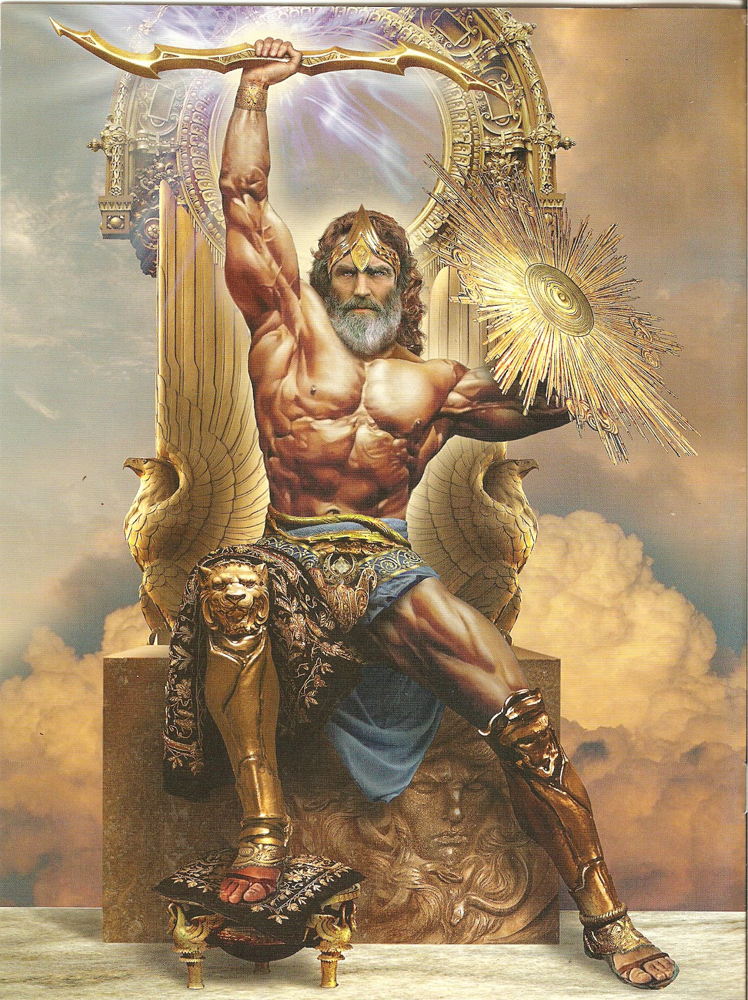

Mythologie grecque
La source d'une legende
La mythologie grecque, c'est-à-dire l'ensemble organisé des mythes provenant de la Grèce antique, se développe au cours d'une très longue période allant de la civilisation mycénienne jusqu'à la domination romaine. La rencontre entre les Grecs et les Romains coïncide avec celle de la mythologie grecque et de la mythologie romaine : la première exerce une forte influence sur la seconde, qui ne s'y réduit pas pour autant. Longtemps après la disparition des religions grecque et romaine, la mythologie grecque est utilisée comme sujet d'inspiration par les artistes, et continue à l'être de nos jours.
L'évolution de son expression
La mythologie grecque nous est parvenue grâce à un vaste ensemble de textes dont les plus anciens sont les épopées d'Homère et les poèmes d'Hésiode, principalement la Théogonie, mais aussi par les arts picturaux comme la céramique ou par les monuments sacrés. L'ensemble de ces sources présente des généalogies et des récits qui forment un système doté d'une cohérence limitée. Les mythes grecs témoignent de la représentation que les anciens Grecs se faisaient du monde. Néanmoins, le statut de la mythologie grecque est complexe, car la mythologie dépasse le cadre de la religion. Les personnages et les événements mythiques rapportés par la tradition étaient pour les Grecs, du moins dans leurs grandes lignes, des réalités historiques relevant d'un passé lointain et servaient donc de base de travail aux historiens antiques. Dans le même temps, la mythologie fournit une ample source d'inspiration à la littérature et aux arts grecs antiques.
représentation
